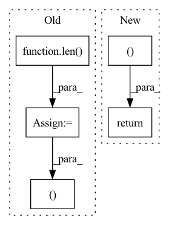

Pattern ID :3317
Before Change
lens = lens.to(dtype=torch.long)
max_len = x.size(2)
mask = torch.arange(max_len).to(lens.device).expand(
len( lens) , max_len
) >= lens.unsqueeze(1)
x = x.masked_fill(mask.unsqueeze(1).to(device=x.device), 0)
// del mask
lens = self.get_seq_len(lens)
sh = x.shape
if self.heads != -1:
x = x.view(-1, self.heads, sh[-1])
out = self.conv(x)
if self.heads != -1:
out = out.view(sh[0], self.real_out_channels, -1)
return out, lens
class GroupShuffle(nn.Module):
def __init__(self, groups: int, channels: int):After Change
if self.use_mask:
x = self.mask_fill(x, lens)
out = self.conv(x)
return out, self.get_seq_len(lens)
def GroupShuffle(groups: int, channels: int) -> nn.Module:
Group shuffle operator from shufflenet.In pattern: SUPERPATTERN
Frequency: 3
Non-data size: 5
Instances Fragment ID: 17233350
Project Name: scart97/thunder-speech
Commit Name: 1eb7dfb6a8a7b1e3d30aaebb26a0f0ca0390e542
Time: 2021-01-30
Author: scart.lucas@gmail.com
File Name: src/thunder/jasper/blocks.py
M Class Name: MaskedConv1d
N Class Name: MaskedConv1d
M Method Name: forward(3)
N Method Name: forward(3)
M Parent Class: nn.Module
N Parent Class: nn.Module
M File Name: src/thunder/jasper/blocks.py
N File Name: src/thunder/jasper/blocks.py
M Start Line: 165
M End Line: 185
N Start Line: 225
N End Line: 239
Before Change
m, x_rnn, _ = self.erb_stage(feat_erb)
spec = self.mask(spec, m, atten_lim) // [B, 1, T, F, 2]
lsnr, _ = self.lsnr_net(x_rnn)
out_specs = [spec.squeeze(1).clone() for _ in range(len( self.refinement_stages) + 1)]
// re/im into channel axis
spec_f = (
spec.squeeze(1)[:, :, : self.df_bins].permute(0, 3, 1, 2).clone()
) // [B, 2, T, F_df]
h_conv: Optional[Tensor] = None
for i, (stage, _) in enumerate(zip(self.refinement_stages, self.refinement_snr_max)):
refinement, h_conv, _ = stage(self.cplx_comp(spec_f), h_conv)
spec_f = spec_f + refinement
out_specs[i + 1][..., : self.df_bins, :] = spec_f.permute(0, 2, 3, 1)
spec[..., : self.df_bins, :] = spec_f.unsqueeze(-1).transpose(1, -1)
return spec, m, lsnr, out_specs
def init_model(df_state: Optional[DF] = None, run_df: bool = True, train_mask: bool = True):
assert run_df and train_maskAfter Change
r, _, _ = self.refinement_stage(self.cplx_comp(spec_f))
spec_f = self.refinement_op(spec_f, r)
spec[..., : self.df_bins, :] = spec_f.unsqueeze(-1).transpose(1, -1)
return spec, m, lsnr, None
def init_model(df_state: Optional[DF] = None, run_df: bool = True, train_mask: bool = True):
assert run_df and train_mask Fragment ID: 17233346
Project Name: rikorose/deepfilternet
Commit Name: 946b362aa406f8a1808a252393351d0e7523130a
Time: 2022-04-12
Author: h.schroeter@pm.me
File Name: DeepFilterNet/df/multistagenet.py
M Class Name: MSNet
N Class Name: MSNet
M Method Name: forward(3)
N Method Name: forward(3)
M Parent Class: nn.Module
N Parent Class: nn.Module
M File Name: DeepFilterNet/df/multistagenet.py
N File Name: DeepFilterNet/df/multistagenet.py
M Start Line: 534
M End Line: 547
N Start Line: 504
N End Line: 510
Before Change
// device = output.device
batch_size = len( x)
batch_size = batch_size // 2
x1, x2 = x[:batch_size], x[batch_size:]
emb1, emb2 = self.backbone(x1), self.backbone(x2)
emb1, emb2 = emb1.squeeze(), emb2.squeeze()
z1, z2 = self.projection_mlp(emb1), self.projection_mlp(emb2)After Change
if return_features:
out0, out1 = (out0, f0), (out1, f1)
return out0, out1
Fragment ID: 17233354
Project Name: lightly-ai/lightly
Commit Name: 755eb1c6d21615fbf14a2d4292e1e62cc5f56150
Time: 2020-12-26
Author: daviddobre@gmail.com
File Name: lightly/models/simsiam.py
M Class Name: SimSiam
N Class Name: SimSiam
M Method Name: forward(4)
N Method Name: forward(2)
M Parent Class: nn.Module
N Parent Class: nn.Module
M File Name: lightly/models/simsiam.py
N File Name: lightly/models/simsiam.py
M Start Line: 128
M End Line: 154
N Start Line: 128
N End Line: 169